The problems faced by biologists differ in multiple ways from traditional computer vision problems. For example, object detection in computer vision typically involves only a few objects per scene, e.g. determining the approximate locations of cars or pedestrians in a self-driving car application. On the other hand, biologists may need to detect hundreds or thousands of cells in a single image, often with precise segmentations of cell boundaries. Because of these differences, the best algorithms for biological problems might not be the same as those used in standard computer vision. In this chapter, we introduce and describe several neural network architectures and loss functions for biological applications, that are especially useful for identifying and outlining objects in images (i.e., segmentation). In subsequent chapters, these concepts will be applied to other biological problems besides segmentation. For a deeper dive into computer vision topics we recommend several resources in Section 4.4.
4.1 Neural network architectures
In computer vision, multiple neural network architectures were designed for various visual tasks. These architectures take as input an image, which often has multiple channels - in the case of natural images there are three input channels for red/green/blue. The neural networks process the image and output various quantities depending on the task. For example, in the case of object recognition, the networks output a single probability vector to indicate the likelihood that each possible object (cat, dog etc) is in the image. As an example, we illustrate Alexnet1, the first neural network to achieve high performance at object classification. This neural network takes as input an RGB image, applies filters to the image, downsamples the image (reducing the size of the image), and then repeats this process several times, in the end producing an object category label.
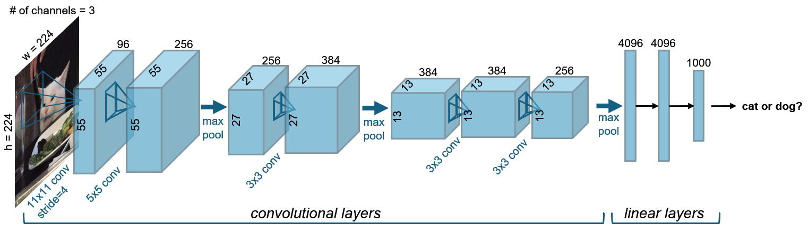
Figure 4.1: Alexnet architecture, adapted from1. This early neural network first demonstrated the capabilities of deep learning when trained on large datasets.
In the case of biological problems, however, it is often necessary for the output to be the same size as the input – pixel-level labels – rather than a single object category label. For example, for cell classification, each pixel in the output may represent the cell class of the pixel. A common architecture for this is a u-net2, which applies filters and downsamples like Alexnet, and then additionally applies filters with upsampling, in the end producing an output at the same pixel resolution as the input.
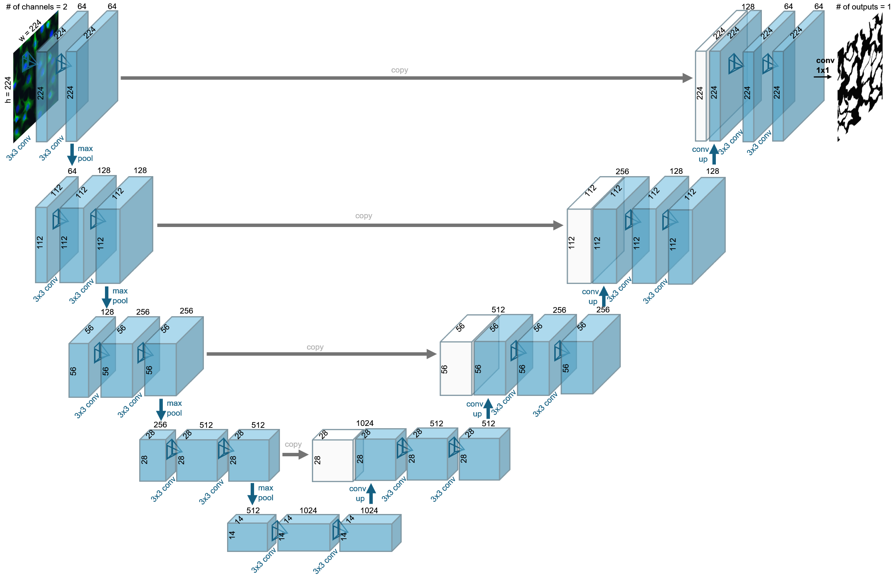
Figure 4.2: U-net architecture, adapted from2. This neural network was revolutionary for biological analysis, in part due to the image-sized outputs and dense skip connections between layers on the downsampling and upsampling pass.
4.1.1 Linear layers (aka fully-connected layers or dense layers)
Early research focused on the computational properties of perceptrons, defined as linear weighted sums of inputs, followed by a nonlinear activation function3. In other words, a vector of features \(\vec{x}\) are the input, they are multiplied by a weight specific for each feature \(\vec{w}\), summed together, and then put through a nonlinearity. An example of a feature set may be a summary of cell-based quantifications in an image, like how many cells are oblong or the fraction of cells with specific RNA expression, and the output may represent the phenotype of the cells in the image, for example cancerous or non-cancerous.
A neural network layer consists of a collection of such perceptrons, each with their own input weights; when these vectors of weights for each perceptron are put together, they create a weights matrix \(W\). Another term often added to these computations is a bias value, and there is one term for each output, creating a vector \(\vec{b}\). This additive term provides flexibility for the layer to produce non-zero outputs, even when the inputs are zero. This is summarized by Equation 4.1, where \(m\) is the number of inputs \(n\) is the number of outputs.
The output of the linear layer is given by Equation 4.2. \[
\vec{y} = W\vec{x} + \vec{b} = [\sum_{j=1}^m W_{ij} x_{j} + b_{i}]_{i=1}^n.
\tag{4.2}\]
Each of the elements in \(\vec{x}\) and \(\vec{y}\) are also called neural network units. The values of these elements, which are dependent on the specific inputs to the layer, are called activations.
The weights matrix allows any combination of inputs to be used to create each output. This is why these layers are also called “fully-connected”, because there is a weight value between each input and output feature. They can also be referred to as “dense” layers because the connectivity is not sparse.
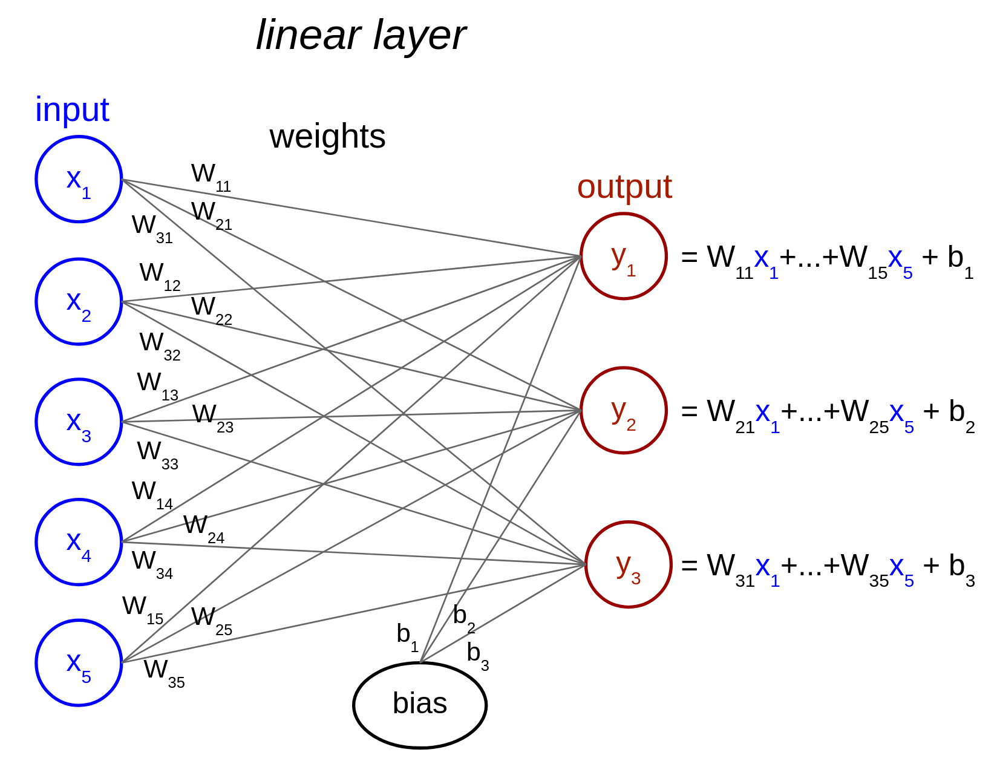
Figure 4.3: Illustration of a linear layer with five input features and three output features.
The activation function (\(f\)) is the nonlinearity applied to each output of the linear layer, such as a ReLU nonlinearity which sets the minimum value of the output to zero (Equation 4.3). The nonlinearity allows the network to compute more complicated functions of the input than would be possible with a simple linear model4. In practice, this is essential – when processing microscopy data, we are performing a complex, nonlinear transformation of the pixel intensities to variables like cell type.
Figure 4.4: ReLU nonlinearity. This is the most-used activation function in neural networks, sometimes with small modifications.
A sequence of such layers that are applied in series, each on the output of the previous one, is called a multilayer perceptron (MLP). This is the simplest example of a deep neural network, and we illustrate the code below.
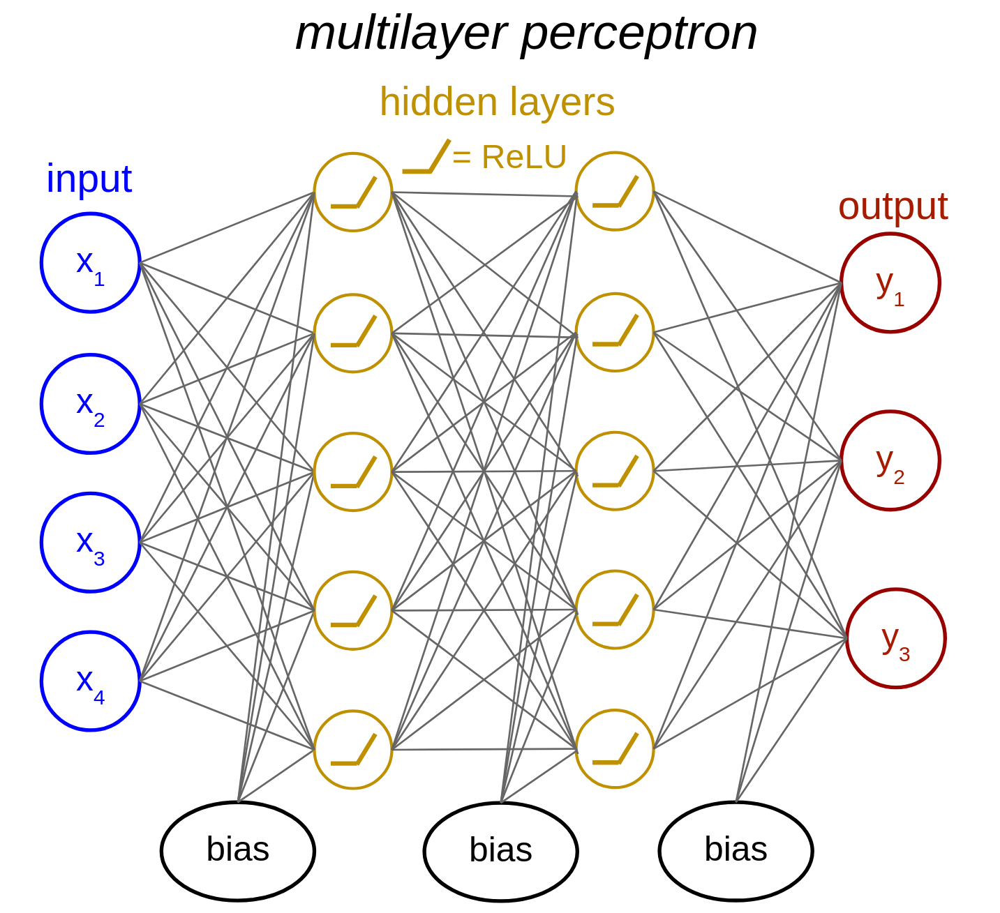
Figure 4.5: Illustration of a multilayer perceptron (MLP) with two hidden layers.
For images, we note that dense linear layers are not efficient in the number of parameters and computations they perform. To see why, consider a modest-sized input image of 100 by 100 pixels with 3 channels. In this case, there are 30,000 input values. If the output of the layer is the same size as the input, then there are 30,000 output values. The weights matrix then has size 30,000 by 30,000 and the bias vector has length 30,000. This is almost a billion parameters to fit, and would lead to overfitting even with a large amount of training data.
TipMulti-Layer Perceptron for a 100 x 100 pixel image
Here we show a code example for a multi-layer perceptron with 30,000 input values, a hidden layer with 30,000 units, and an output layer with one output. The code is run on an example of 8 input images, and outputs the sizes of the input, output, weights matrix (W), and bias vector (b).
show code
import torch from torch import nnfrom torch.nn import functional as Fclass MLP(nn.Module):""" Network with one hidden layer Args: n_inputs (int): number of input units n_hidden (int): number of units in hidden layer Attributes: in_layer (nn.Linear): weights and biases of input layer out_layer (nn.Linear): weights and biases of output layer """def__init__(self, n_inputs, n_hidden):super().__init__() # needed to invoke the properties of the parent class nn.Moduleself.in_layer = nn.Linear(n_inputs, n_hidden) # input units --> hidden unitsself.out_layer = nn.Linear(n_hidden, 1) # hidden units --> outputdef forward(self, X):""" Input images and output label (e.g. 0 for cat / 1 for dog) Args: X (torch.Tensor): input image (flattened), must be of length n_inputs. Can also be a tensor of shape n_images x n_inputs, containing n_images of image vectors Returns: torch.Tensor: network outputs for each input provided in X of length n_images. """ z =self.in_layer(X) # hidden representation z = F.relu(z) y =self.out_layer(z)return y# declare networknet = MLP(n_inputs=30000, n_hidden=30000)print('shape of W in first layer: ', net.in_layer.weight.data.shape)print('shape of b in first layer: ', net.in_layer.bias.data.shape)# define input imagesn_images =8X = torch.zeros((n_images, 30000))# evaluate networknet.eval()with torch.no_grad(): y = net(X)print('input shape: ', X.shape)print('output shape: ', y.shape)
shape of W in first layer: torch.Size([30000, 30000])
shape of b in first layer: torch.Size([30000])
input shape: torch.Size([8, 30000])
output shape: torch.Size([8, 1])
4.1.2 Convolutional layers
Instead of linear layers, convolutional layers are often used in vision tasks, as a parameter-efficient alternative5. A convolutional layer slides a small two-dimensional filter across the input image, computing a weighted sum of the input at each image position using the filter weights. It also includes the addition of a vector of bias terms. For 2D image processing, we use two-dimensional convolutions, but one/three dimensional convolutions may be used for 1D/3D data respectively. Here is an illustration of a 2D convolution:
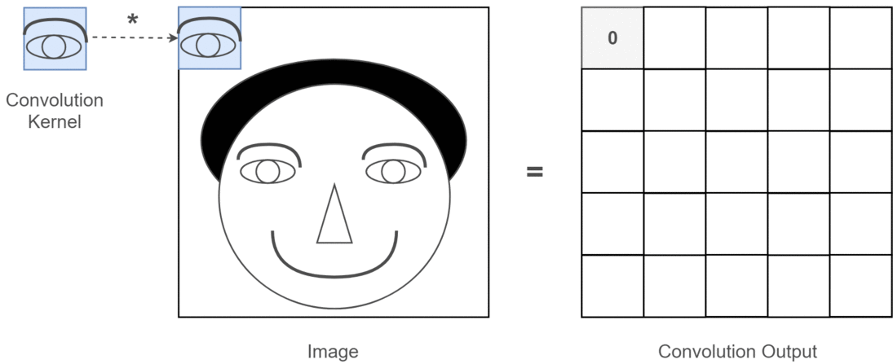
Figure 4.6: Toy illustration of convolutional operation from this article. In practice, convolutional kernels are more complicated than simple template detectors.
NoteConvolution vs Filtering
Note that “convolution” and “filtering” are often conflated in neural network terminology, whereas they refer to distinct operations in the signal processing and mathematical literature.
The 2D convolutional filter \(W\) is often also called a kernel, and the size of the filter is called the kernel size. To preserve the size of the input, the kernel size needs to be odd and the input needs to be padded with zeros around the edges of the image. This padding size should be the floor of half the kernel size, e.g. if the kernel size is 3 the padding is required to be 1, as shown in Figure 4.7. Additionally, the stride parameter needs to be set to 1, which is the number of pixels between each application of the filter. A stride of 2 would mean skipping over every other input position both vertically and horizontally. In most applications, especially with small kernel sizes, a stride of 1 is used for convolution.
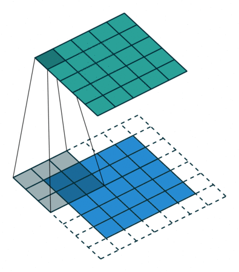
Figure 4.7: Convolutional operation with padding from this GitHub. This illustrates the creation of a single channel output from a single channel input, where the input is in blue, the filter is gray, and the output is in green. In practice, both inputs and outputs have multiple channels and all combinations of input and output need to be calculated and summed accordingly.
The number of input and output images are called channels, similar to the red/green/blue channels for RGB images. Figure 4.7 is an example with a single input and a single output channel, but in general a 2D convolutional layer has multiple input and output channels. Each output channel is the result of a 2D convolutional kernel applied to the input, with weights for each input feature.
A convolutional layer operates under two main assumptions: 1) the computation only requires local features that are within the spatial extent of the filter operation; and 2) it is not necessary to perform different computations at different positions in the image, and thus the same filter operation can be convolutionally applied across all positions in the image. When these assumptions are acceptable, a convolutional layer can reduce the number of parameters substantially compared to linear layers. We note that for certain microscopy tasks, the amount of spatial context required may vary - for example determining the boundary of a tissue may require a larger context than a task like nuclear segmentation.
Taking our example from above, let’s estimate the number of parameters with filters (i.e., kernels) of size 3 by 9 by 9 pixels, where 3 is the number of input channels and 9 is the size in pixel space, the “kernel size”. If we define the layer to have 6 output channels, this requires 6 of these kernels, resulting in 1458 parameters in the kernels, along with 6 bias terms, resulting in 1464 parameters in total. As you can see, the number of parameters now is independent of the size of the input in pixels, and this is a dramatic reduction from the nearly 1 billion parameters for the dense linear layer example above.
TipConvolutional Network Example Code
Here we show a code example for a convolutional layer with 3 input channels, 6 output channels and a kernel size of 9.
show code
class ConvolutionalLayer(nn.Module):"""Deep network with one convolutional layer Attributes: conv (nn.Conv2d): convolutional layer """def__init__(self, c_in=3, c_out=6, K=9):"""Initialize layer Args: c_in: number of input stimulus channels c_out: number of output convolutional channels K: size of each convolutional filter """super().__init__()self.conv = nn.Conv2d(c_in, c_out, kernel_size=K, padding=K//2, stride=1)def forward(self, X):"""Run images through convolutional layer Args: X (torch.Tensor): n_images x c_in x h x w tensor with stimuli Returns: (torch.Tensor): n_images x c_out x h x w tensor with convolutional layer unit activations. """ Y =self.conv(X) # output of convolutional layerreturn Y# declare layerlayer = ConvolutionalLayer(c_in=3, c_out=6, K=9)print('shape of filter W: ', layer.conv.weight.data.shape)print('shape of b: ', layer.conv.bias.data.shape)# define input imagesn_images =8X = torch.zeros((n_images, 3, 100, 100)) # n_images x c_in x h x w# evaluate networklayer.eval()with torch.no_grad(): y = layer(X)print('input shape: ', X.shape)print('output shape: ', y.shape)
We define the receptive field size of a convolutional layer as the total spatial extent of pixels that influence the activations of the layer. For a single convolutional layer, the activations have a receptive field size equivalent to its kernel size: each activation only receives information from pixels within the kernel size. However, objects in images are often larger than the kernel size. To increase the amount of spatial information used for computation, pooling layers are introduced between convolutional layers. A pooling layer performs operations in sliding windows across the image, just like the convolution layer, but in this case a maximum or average operation is computed within the window, independently for each input channel (rather than the application of a filter). To reduce the size of the image, this convolutional operation is applied with a “stride”: to downsample the image by a factor of two, we may use a pooling size of 2 with a stride also set to 2, like in the example below.
Figure 4.8: Illustration of max-pooling with a kernel size of 2 and stride of 2, from here.
TipMax-Pooling Example Code
This example code implements max-pooling with a kernel size of 2 and a stride of 2.
If we apply several convolutional and pooling layers, we end up with an output which is smaller in resolution than the input. In Figure 4.9, we show an example of such a network, that has been trained to classify the handwritten digits of the MNIST dataset6. The activations of the units in the network across layers are visualized:
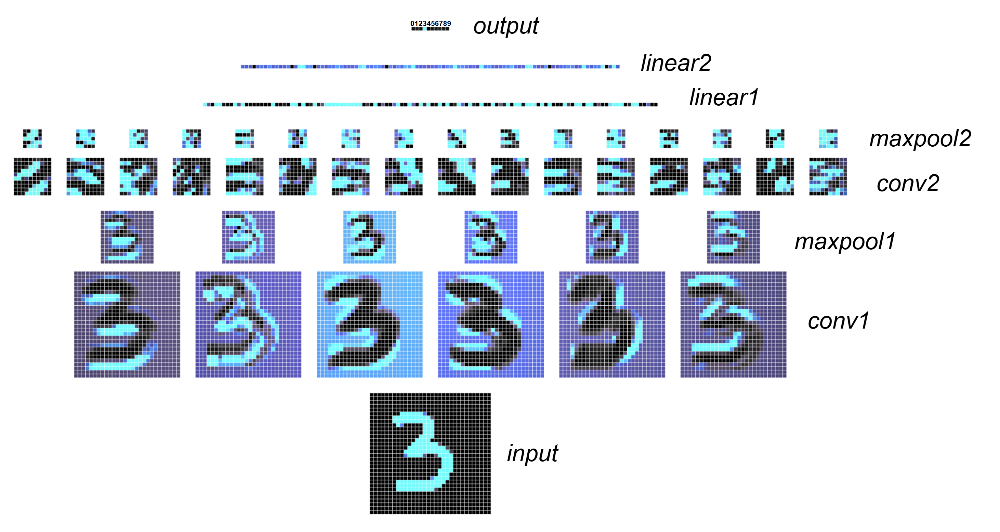
Figure 4.9: Activations of each layer of a small, illustrative network. Lighter blue indicates a higher activation for each unit. The final output layer represents the probability of the input image corresponding to a value between 0 and 9. In this example, the network correctly identifies the input as the number 3. To see this in action, check out the interactive demonstration by Adam Harley: https://adamharley.com/nn_vis/cnn/2d.html
Having an output that is downsampled relative to the input is appropriate for a task like object recognition, where the output is the class of the image, like cat or dog. In the case of biological images, this could be a global image label of a cancerous or non-cancerous phenotype7. However, for pixel-specific classification or segmentation, we require the output to be the same size as the input. This is where u-nets come in.
4.1.3 U-nets
U-nets were introduced by Ronneberger, Fischer, and Brox2 (Figure 4.2). They share some similarities with feature pyramid networks8, but u-nets are more frequently used in biological applications so we will focus on them. U-nets have what is called an encoder-decoder structure, like an autoencoder9. The “encoder” consists of the convolutional layers and pooling layers (downsampling), and is the first half of the network. The “decoder” consists of convolutional layers and upsampling or strided conv-transpose layers. This is the second half of the network, which returns an output at the same spatial resolution as the input.
In the case of an autoencoder9, the network is trained to reproduce the input, and the output of the encoder is defined to be lower dimensional than the input. The output of the encoder is then a compressed version of the inputs that can be used to visualize the data. We can also visualize the output of the encoder of a u-net, although u-nets are usually not trained to predict their inputs. Instead, u-nets are often trained to predict pixel-level cell probabilities, with pixels inside cells defined as one and pixels outside cells defined as zero.
The downsampling results in a loss of fine spatial information. To recover this information, in the u-net the output of the convolutional layers in the encoder is concatenated with the activations from the decoder at each spatial scale using skip connections (“copy” operation in Figure 4.2). This preserves the higher resolution details, which is important for precise segmentations and pixel-wise predictions.
Conventional u-nets2 have two convolutional layers per spatial scale and a small kernel size of 3 in each layer. Each of these sets of convolutional layers per spatial scale are often referred to as blocks. The downsampling after each block is often set to a factor of 2. Because the kernel size is small, the only way to have large receptive field sizes is through several downsampling blocks. If we want the network to learn complicated tasks across many diverse images, then we need it to have a large capacity. This can be achieved by adding more weights to the network, for example by increasing the number of channels in the convolutional layers and/or by adding more convolutional layers in each block and/or by increasing the number of downsampling and upsampling stages10.
4.1.4 Vision transformers
Vision transformers are modern architectures that are replacing convolutional networks in many applications. They are not as parameter-efficient as convolutional neural network. For example, the Cellpose segmentation u-net has 6.6 million parameters while ViT-H (“vision-transformer-huge”) has 632 million parameters11. They are still much more efficient than dense linear layers due to special architecture choices (see below), and they introduce a new type of operation called self-attention. Transformers avoid overfitting this large set of parameters through training on very large amounts of data. Even though they have many more parameters than standard convolutional networks, they are not too much slower because most of the operations within the transformer are matrix multiplications which are fast on newer GPUs with tensor cores (learn more in this explainer from tech-radar). With more parameters, they have a larger capacity than standard convolutional neural networks to learn from large training datasets.
The vision transformer first divides the input image into patches, e.g. 16 by 16 pixels each. In the first layer of the transformer the patches are transformed into the embedding space, using a linear operation that is often implemented using strided convolutions. This embedding space is generally several times larger than the number of pixels in the patch; for example the embedding space in ViT-H is 1280. If an image is 512 by 512 pixels, then it has 32 by 32 (=1024) patches, so the patch embeddings are of dimensionality 1024 patches by 1280 feature dimensions in the case of ViT-H.
These patch embeddings are input to the transformer encoder, which consists of many blocks (\(L\)). Each transformer block has a self-attention block and a multi-layer perceptron (MLP) block. The input patches to each self-attention block are multiplied by three sets of learned feature vectors, which create the queries (Q), keys (K), and values (V) input to the self-attention block. The queries and keys are multiplied across patches, and a normalization operation is applied – this is the attention matrix, where each entry \((i,j)\) is the interaction between patches \(i\) and \(j\). Because this matrix is across all patches in the image, this operation enables sharing of information across the entire image. The attention matrix is then multiplied with the values matrix, and the result of this operation, which is number of patches by feature dimension, is fed into the MLP. This MLP acts on the feature dimension, applying the same operation to each patch, and often often consists of two layers, with a nonlinearity in the hidden layer only. Residual connections are added to both the attention and MLP operations, in order to speed up training.
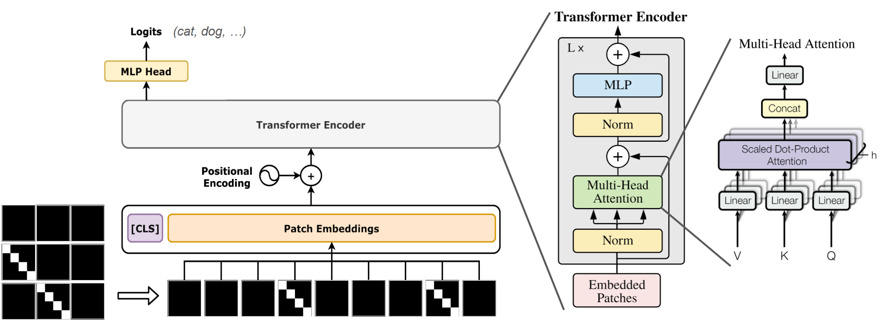
Figure 4.10: Vision transformer architecture. Originally invented for language modeling12, transformers were then adapted for image processing11. The critical innovation in transformers is the self-attention block (left illustration from PyTorchStepByStep).
Vision transformers were first trained on image classification tasks but have been extended for various visual tasks like segmentation. A notable example is the Segment Anything model (SAM)13. This model was originally trained and designed for natural image datasets, but has since been adapted for cellular segmentation by multiple groups14,15. The Segment Anything model is considered to be a foundation model: it can generalize well to new images and be used for a variety of visual tasks in addition to segmentation.
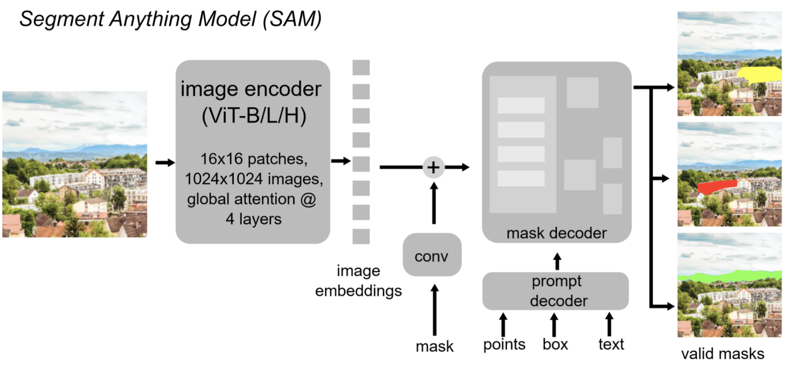
Figure 4.11: Segment Anything model13; illustration from16. This architecture differs from a standard transformer in the decoding module, which is necessary for outputting segmentations of images. This model requires inputs in the form of point clicks, box outlines or textual instructions.
SAM is trained as a promptable model, meaning a user can specify an object for segmentation with a click or a bounding box and the model will produce a predicted object in that region. However, we often want automated segmentations in which we do not have to click on everything in the image. Thus, multiple groups have adapted the SAM decoder to predict auxiliary variables, which we will discuss next as we learn about loss functions. Other innovations in transformers have adapted the architecture to be more suited to the spatial layout of images, such as the Swin transformer17, which has also been adapted for biological applications18,19.
4.2 Loss functions
In a standard image classification network, the output is a vector with length equal to the number of classes in the task. Each of the entries in this vector represents the predicted probability of the class, and the predicted label for the image is chosen as the index of the vector with the largest entry. For each training image we have a ground-truth label for the class. How close the network matches the label is the loss, which is defined as a function between the vector output of the network and the ground-truth label. A lower loss means we matched the ground-truth data better. The gradients of the network are computed automatically via back-propagation, and an optimizer is specified to modify the parameters in order to minimize the loss (described more below).
For classification, we are evaluating predicted probabilities, and so we need to take the output from the network and convert it to a probability across classes that sums to one. For this a softmax operation is performed, defined as \(p_c(x) = e^{x_{c}} / (\sum_{i=1}^C e^{x_{i}})\). The cross-entropy loss is a standard loss function for classification, and for comparing probability distributions generally. This loss maximizes the predicted probability of the true class, achieving its minimum value of 0 when the probability of the true class is predicted to be one (Equation 4.4).
In segmentation and biological classification tasks, as mentioned before, the output is often the same size as the input in pixels and the loss is computed per-pixel. There will thus be multiple outputs of this size, each one corresponding to a class, like the entries in the vector for overall image classification. In the original u-net paper, the loss was defined using two classes, “not cell” as zeros and “cell” as ones2.
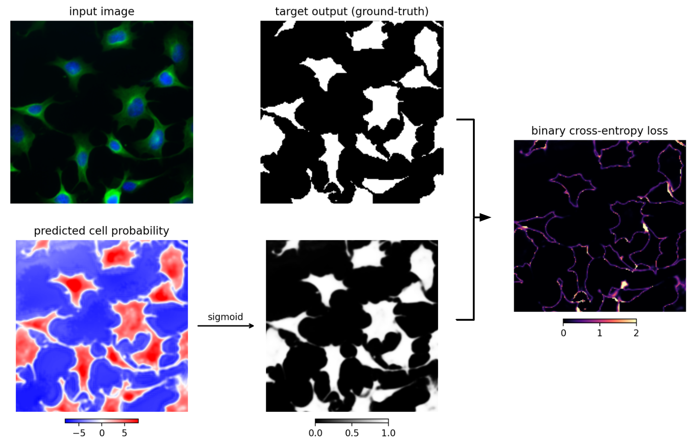
Figure 4.12: An image (upper left) is input to a u-net trained to predict cell/not cell pixels. The output of the network is the predicted cell probability image (bottom left). A sigmoid is applied to the cell probability (middle bottom), and compared to the ground-truth cell probabilities (middle top). The comparison is performed using the binary cross-entropy loss per-pixel (right).
In pytorch, the softmax and cross-entropy loss are combined into a single function; for two-class prediction the function is nn.BCEWithLogitsLoss, and for multi-class prediction the function is nn.CrossEntropyLoss.
TipCell/Not-Cell Prediction
Here is example code with cell/not-cell prediction with one convolutional layer.
To create segmentations for each cell, a threshold is defined on the cell probability and any pixels above the threshold that are connected to each other are formed into objects. This threshold is defined using a validation set - images that are not used for training or testing - to help ensure the threshold generalizes to the held-out test images. The predicted segmentations with this loss function often contain several merges, because cells can often touch each other and the connected components of the image will combine the touching cells into single components.
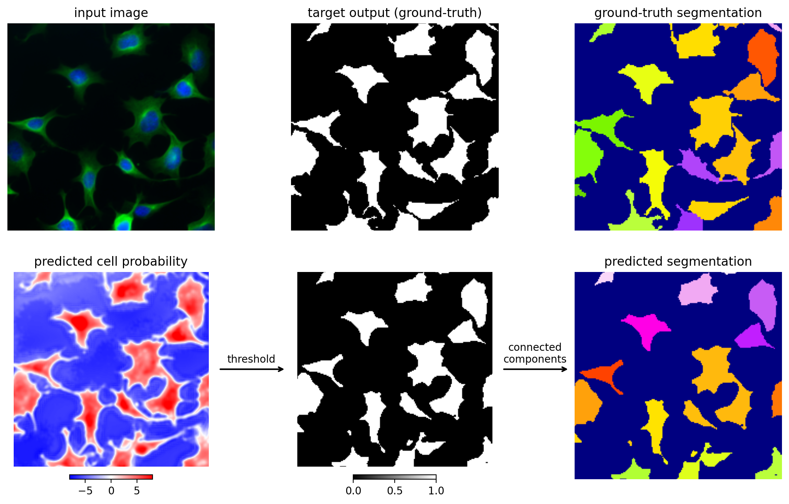
Figure 4.13: Segmentation with pixelwise cell/not cell predictions.
To better train the network to discriminate boundaries, a boundary pixel class can be introduced, creating a three class prediction loss function. This can improve segmentation performance, but can still contain merges. This is illustrated in the tutorial notebook.
The training signals for the network so far have consisted only of class labels. However, it can be helpful to ask the network to predict more complex information about the segmentation. For example, the distance to the boundary can be used to provide context about the local shape of the object20. The distance-to-boundary is computed for each pixel in each object, and the network is trained to predict this, in addition to a multi-class loss like cell/not-cell. Distance-to-boundary is not a class but a continuous variable. In this case, the loss function often used is a mean-squared error loss function between the ground-truth (\(\tilde{Y}\)) and the predicted values (\(Y\)), as shown in Equation 4.5.
Stardist21 extends this approach by computing the distance-to-boundary along multiple fixed rays emanating from each pixel in an object, which can then be used for reconstruction of convex objects22. Cellpose creates a different type of representation from gradients indicating the direction towards the cell center, and tracks the gradients to reconstruct the segmented objects from the fixed points of the dynamics10. This representation helps prevent merges by having strong differences in gradients in boundary areas between two objects, and is sufficiently flexible to be used for non-convex cellular shapes. Other examples of auxiliary functions include local shape descriptors (LSDs), which include other global features like the size of the object, which can be useful for electron microscopy segmentation of neurons with long processes23.
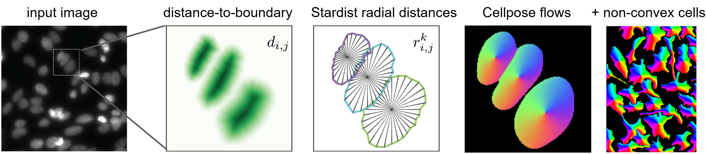
Figure 4.14: Additional loss functions for segmentation.
4.3 Training neural networks
Now that we have defined a loss function, we want to minimize the loss \(\ell\) by updating the weights in the network. For a problem like segmentation, we will need images with ground-truth segmentation labels – this labeling can be done using tools like Ilastik, ImageJ, Paintera, or Napari. Once ground-truth labeling is performed on some images, training can be attempted.
We will want to use most of the ground-truth labeled images for training, making up a training set, and leave a small subset (like 10%) for testing the performance of the network. For some algorithms, we may also need a validation set for setting post-processing parameters like the cell probability threshold, in which case we can reserve 10-15% of the training set images for validation. In other words, we use the validation set to determine the threshold on the cell probabilities that produces the best segmentations on the ground-truth labels. See Chapter 5 for more details on this.
During optimization, we run the training images through the network, compute the loss, and compute the weight updates that minimize the loss via gradient descent. Gradient descent computes the gradient of the loss with respect to each weight. Moving the weights in the negative direction of the gradient reduces the loss for the given images or data points over which the loss is computed. These weight updates are scaled by the learning rate \(\alpha\) (Equation 4.6).
\[
\begin{aligned}
\vec{v}_t &= \alpha \, d L(\vec{w}_t) / d \vec{w}_t \\
\vec{w}_t &= \vec{w}_{t-1} - \vec{v}_t
\end{aligned}
\tag{4.6}\]
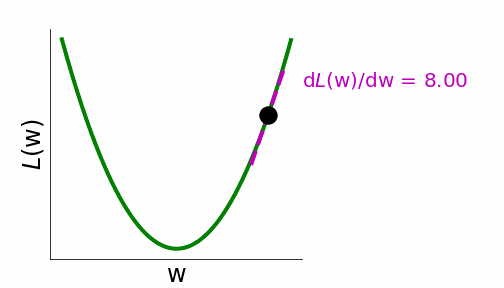
Figure 4.15: Gradient descent illustration, from Neuromatch.
We could compute the loss and gradients over all images in the training set, but this would take too long so in practice the loss is computed in batches of a few to a few hundred images – the number of images in a batch is called the batch size. The optimization algorithm for updating the weights in batches is called stochastic gradient descent (SGD). This is often faster than full-dataset gradient descent because it updates the parameters many times on a single pass through the training set (called an epoch). Also, the stochasticity induced by the random sampling step in SGD effectively adds some noise in the search for a good minimum of the loss function, which may be useful for avoiding local minima.
It can also be beneficial to include momentum to speed up training, with some value \(\beta\) between zero and one. Momentum pushes weight updates along the same direction they have been updating in the past. The updated version of \(\vec{v}\) in this case is shown in Equation 4.7 where in standard SGD \(\beta = 1 - \alpha\). In other words, past weight updates slowly decay over optimization steps (at rate \(\beta\)), and new weight updates are added with size \(\alpha\). \[
\vec{v}_t = \beta \vec{v}_{t-1} + \alpha\, \frac{d L(\vec{w}_t)}{d \vec{w}_t}
\tag{4.7}\]
Different weights in the network may have differently scaled gradients, and thus a single learning rate may not work well. The Adam optimizer uses a moving average of both the first and second moment of the gradient for rescaling the weight updates while including a momentum term24. This optimizer works better than standard SGD in many cases, and requires less fine-tuning to find good hyperparameter values. In addition to using an optimizer like Adam, it may be helpful to use a learning rate schedule which reduces the learning rate towards the end of training to enable smaller steps for fine-tuning the final weights25. Sometimes a validation set is used to re-instantiate the best weights, as evaluated on the validation set, before a decrease in the learning rate26.
During fitting it is important to monitor the training loss and the validation loss. With an appropriate learning rate that is not too large, the training loss should always decrease. The loss on held-out validation data should also ideally decrease over training. If not, then the network is overfitting to the training set: the weights are becoming specifically tuned for the training set examples and no longer generalize to held-out data.
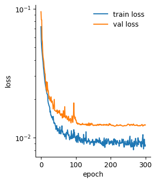
Figure 4.16: Example training loss and validation loss across epochs.
To avoid overfitting to the training set, various weight regularization strategies are used. Most commonly in computer vision problems, weight decay will be used for regularization, which is closely-related to L2 regularization. This operation reduces the weights by a small fraction \(\lambda\) at each optimization step (Equation 4.8).
This fraction is proportional to the size of the weight, so large weights require stronger gradient sizes to maintain their large size. This means that weight changes that are spurious, for example because a single training batch happened to generate them, will be later undone by the weight regularization returning the weights towards zero.
Other forms of regularization include drop-out, in which a random subset of activations are dropped in linear layers27, or entire layers or blocks are randomly dropped28, for example in transformer architectures13. Often normalization layers are used after each layer to normalize the activations, with batch normalization used for convolutional layers and layer normalization used in transformers29,30. This normalization reduces the likelihood of vanishing and exploding gradients, and helps to regularize the weight values.
Additionally, data augmentation reduces the likelihood of overfitting, which is described in Chapter 5. There is also more detail about training neural networks in Chapter 9.
In summary, we hope this chapter serves as a brief introduction to architectures, loss functions, and optimization used for problems the bioimaging community.
Krizhevsky, A., Sutskever, I. & Hinton, G. E. Imagenet classification with deep convolutional neural networks. Advances in neural information processing systems25, (2012).
2.
Ronneberger, O., Fischer, P. & Brox, T. U-net: Convolutional networks for biomedical image segmentation. in International conference on medical image computing and computer-assisted intervention 234–241 (Springer, 2015).
3.
Rumelhart, D. E., Hinton, G. E. & Williams, R. J. Learning representations by back-propagating errors. nature323, 533–536 (1986).
4.
Cybenko, G. Approximation by superpositions of a sigmoidal function. Mathematics of control, signals and systems2, 303–314 (1989).
5.
LeCun, Y., Bengio, Y., et al. Convolutional networks for images, speech, and time series. The handbook of brain theory and neural networks3361, 1995 (1995).
6.
LeCun, Y. The MNIST database of handwritten digits. http://yann. lecun. com/exdb/mnist/ (1998).
7.
Spanhol, F. A., Oliveira, L. S., Petitjean, C. & Heutte, L. Breast cancer histopathological image classification using convolutional neural networks. in 2016 international joint conference on neural networks (IJCNN) 2560–2567 (IEEE, 2016).
8.
Lin, T.-Y. et al. Feature pyramid networks for object detection. in Proceedings of the IEEE conference on computer vision and pattern recognition 2117–2125 (2017).
9.
Hinton, G. E. & Salakhutdinov, R. R. Reducing the dimensionality of data with neural networks. science313, 504–507 (2006).
Dosovitskiy, A. et al. An image is worth 16x16 words: Transformers for image recognition at scale. arXiv preprint arXiv:2010.11929 (2020).
12.
Vaswani, A. et al. Attention is all you need. Advances in neural information processing systems30, (2017).
13.
Kirillov, A. et al. Segment anything. in Proceedings of the IEEE/CVF international conference on computer vision 4015–4026 (2023).
14.
Archit, A. et al. Segment anything for microscopy. Nature Methods22, 579–591 (2025).
15.
Israel, U. et al. CellSAM: A foundation model for cell segmentation. BioRxiv 2023–11 (2025).
16.
Pachitariu, M., Rariden, M. & Stringer, C. Cellpose-SAM: Superhuman generalization for cellular segmentation. bioRxiv 2025–04 (2025).
17.
Liu, Z. et al. Swin transformer: Hierarchical vision transformer using shifted windows. in Proceedings of the IEEE/CVF international conference on computer vision 10012–10022 (2021).
18.
Zhang, X. et al. SwinCell: A 3D transformer and flow-based framework for improved cell segmentation. Communications Biology8, 962 (2025).
19.
Achard, C. et al. CellSeg3D, self-supervised 3D cell segmentation for fluorescence microscopy. eLife13, RP99848 (2025).
20.
Heinrich, L., Funke, J., Pape, C., Nunez-Iglesias, J. & Saalfeld, S. Synaptic cleft segmentation in non-isotropic volume electron microscopy of the complete drosophila brain. in International conference on medical image computing and computer-assisted intervention 317–325 (Springer, 2018).
21.
Schmidt, U., Weigert, M., Broaddus, C. & Myers, G. Cell detection with star-convex polygons. in Medical image computing and computer assisted intervention – MICCAI 2018 (eds. Frangi, A. F., Schnabel, J. A., Davatzikos, C., Alberola-López, C. & Fichtinger, G.) 265–273 (Springer International Publishing, Cham, 2018). doi:10.1007/978-3-030-00934-2_30.
22.
Schmidt, U., Weigert, M., Broaddus, C. & Myers, G. Cell detection with star-convex polygons. in International conference on medical image computing and computer-assisted intervention 265–273 (Springer, 2018).
23.
Sheridan, A. et al. Local shape descriptors for neuron segmentation. Nature methods20, 295–303 (2023).
24.
Kingma, D. P. & Ba, J. Adam: A method for stochastic optimization. arXiv preprint arXiv:1412.6980 (2014).
25.
Loshchilov, I. & Hutter, F. Sgdr: Stochastic gradient descent with warm restarts. arXiv preprint arXiv:1608.03983 (2016).
26.
Prechelt, L. Automatic early stopping using cross validation: Quantifying the criteria. Neural networks11, 761–767 (1998).
27.
Hinton, G. E., Srivastava, N., Krizhevsky, A., Sutskever, I. & Salakhutdinov, R. R. Improving neural networks by preventing co-adaptation of feature detectors. arXiv preprint arXiv:1207.0580 (2012).
28.
Huang, G., Sun, Y., Liu, Z., Sedra, D. & Weinberger, K. Q. Deep networks with stochastic depth. in European conference on computer vision 646–661 (Springer, 2016).
29.
Ioffe, S. & Szegedy, C. Batch normalization: Accelerating deep network training by reducing internal covariate shift. in International conference on machine learning 448–456 (pmlr, 2015).
30.
Ba, J. L., Kiros, J. R. & Hinton, G. E. Layer normalization. arXiv preprint arXiv:1607.06450 (2016).
31.
Wang, Z. J. et al. CNN explainer: Learning convolutional neural networks with interactive visualization. IEEE Transactions on Visualization and Computer Graphics27, 1396–1406 (2020).
![]()